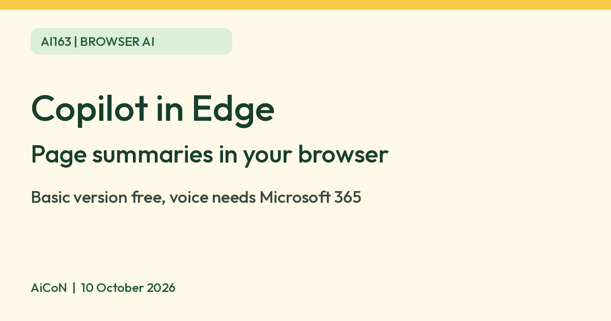

Copilot in Microsoft Edge: free page summaries, and how to limit what it reads
Copilot in Microsoft Edge summarizes pages, videos and PDFs. Microsoft says the basic version is free. It can use your open tabs and history, and you can switch that off.

What it is
Copilot in Microsoft Edge is an AI assistant built into the Edge browser. Microsoft says it can summarize web pages, videos and PDFs, answer questions about the page you have open, and suggest prompts based on what you are viewing. It also works in Edge on phones and tablets.
Is it free
The basic version is. Microsoft's support page describes "Microsoft Copilot (free)" as available free of cost, and lists using it "directly in Copilot in Edge" as one way to reach it. You need to sign in to Edge with a personal Microsoft account. Some extras are not free: Microsoft's Edge guide says Voice, Vision and voice dictation in this Edge experience need a Microsoft 365 subscription. We do not quote a price. Check Microsoft's plan page before you pay.
Is it available in India
Microsoft says Copilot is available in over 170 markets, with exceptions such as China, and its worldwide page lists an India (English) site. New features may not arrive immediately in every region or language. These general Copilot pages do not verify every Edge feature on an Indian account/device. We did not test it.
How to try it
- Update Edge and sign in with a personal Microsoft account.
- Open a web page, video or PDF.
- Select the Copilot icon at the top right, then ask a question or choose Create a Summary.
Check this before you use it
- Copilot may use your open tabs, page titles and browser history as context. Microsoft says not to share sensitive information you would not want used as context.
- You can turn that off in the Edge menu under Copilot and AI by switching off "Allow Copilot to read context clues on the web". The dedicated settings guide gives More (…) > Settings > Copilot and AI. With context off, Copilot cannot answer based on your websites or browsing data; suggestions become more generic.
- The dedicated Context Clues page includes URL, title, page content or screenshots, and browsing history as data that may be shared with Copilot. It says raw browsing context is not saved in conversation history, but your prompt and response are. That is not a no-retention or local-only promise.
- Close sensitive tabs and clear browsing history to remove them from browsing context, as Microsoft advises. Turning context off is a separate control.
- The first time you open it, Microsoft says Copilot informs you or asks permission, depending on your region.
- Summaries can miss or get things wrong. Check important points on the page.
- Microsoft's two guides differ on whether a general, non-page prompt uses broader browsing data: the getting-started guide narrows it, while the dedicated context guide describes shared browsing data. Do not assume only the current page is considered; turn context off for sensitive browsing.
- No daily free-summary quota was established from these sources. Work/school accounts and organizational controls are a separate setup.
- We did not test it ourselves.
Frequently asked questions
Do I need a Microsoft 365 plan?
Not for the basic summaries and questions. Microsoft's Edge guide says Voice and Vision in this Edge experience need a Microsoft 365 subscription. This is not a claim about every standalone Copilot Voice experience.
Sources: Getting started with Copilot in Edge, Copilot free vs Microsoft 365, Supported regions, Copilot worldwide sites, Context Clues controls and data. Checked 10 October 2026.